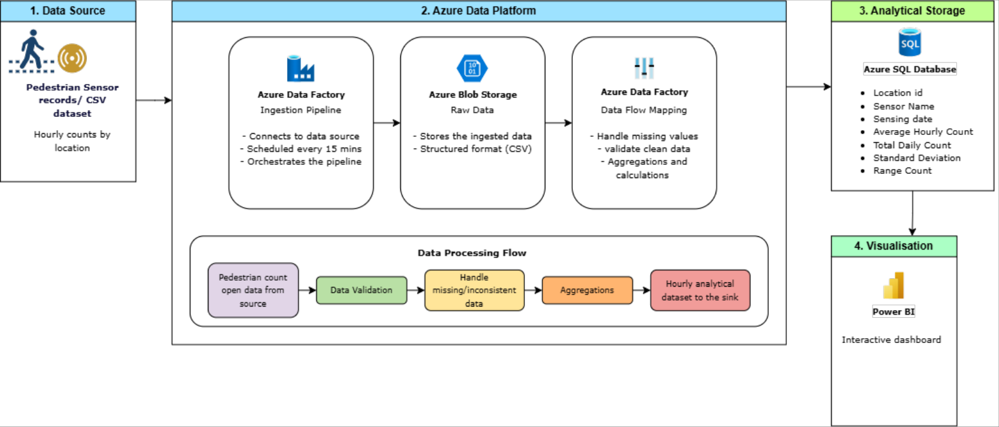
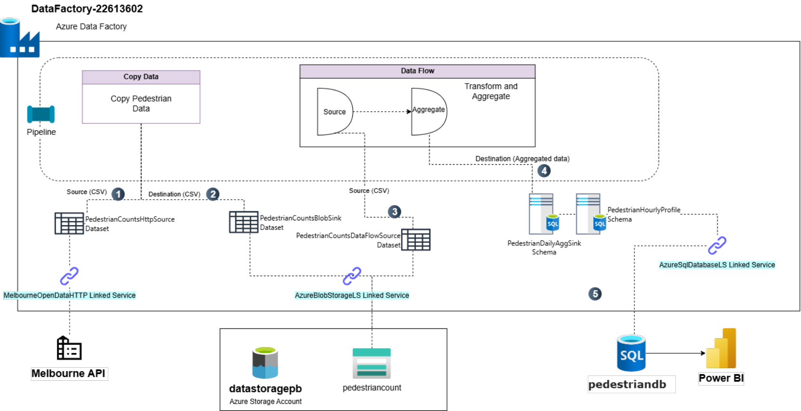
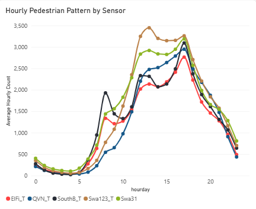
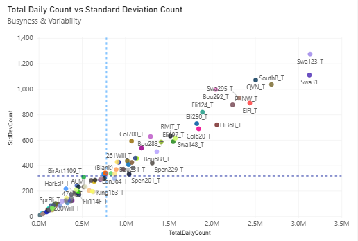

01 / Business case
Busy does not always mean predictable.
City planners need to understand where pedestrian movement is concentrated and when demand changes. Counts alone cannot explain sudden peaks or show where infrastructure needs closer review.
For this individual assessment, I developed an Azure-to-Power BI pipeline for Melbourne’s pedestrian data. My work covered ingestion, cleaning, transformation, visualisation and evidence-based recommendations.
02 / Melbourne pedestrian counts
Melbourne Pedestrian Count System – Cloud based Data Pipeline and Analysis
Business need and proposed solution
Help the City of Melbourne understand pedestrian demand and variability across locations. I built an Azure Data Factory pipeline to ingest the open-data API on a 15-minute schedule, store timestamped CSVs, prepare daily and hourly summaries in Azure SQL and visualise the results in Power BI.
The supplied CSV contains 1,621,525 records, 9 fields and 97 sensor names, spanning 15 September 2024 to 14 September 2026. Its records are hourly; the 15-minute trigger is the ingestion schedule, not the measurement frequency or a guaranteed dashboard refresh rate.
Workflow architecture

How it works
Open data → Data Factory → Blob Storage → Data Flow → Azure SQL → Power BI
- Data Factory copies the City of Melbourne sensor data every 15 minutes.
- Each copy is saved as a timestamped file in Blob Storage, in date and hour folders.
- A Mapping Data Flow cleans the data and summarises it by sensor, day and hour.
- The results load into two Azure SQL tables (hourly and daily).
- Power BI reads from SQL to build the dashboard.

Techniques and findings
I combined hourly trend analysis, volume-versus-variability comparisons and peak-to-quiet-hour ranges. This helps distinguish consistently busy locations from places with sharper changes in flow.


- Swanston Street: Swa31 and Swa123_T stand out for both volume and variability, making them priorities for a closer infrastructure and capacity review.
- Elizabeth Street: Eli368_T shows a more stable pattern, supporting attention to ongoing footpath condition and everyday accessibility.
- Short peak periods: SouthB_T and ElFi_T support investigating targeted signage, staffing and crowd management rather than assuming a full redesign is needed.
Pedestrian counts and variability are planning indicators. They do not directly measure safety, accessibility or the cause of a crowd surge.
03 / Key learnings
From a working pipeline to useful insights.
- Separate data frequency from pipeline frequency. A frequent ingestion schedule does not make hourly source data minute-level.
- Pair volume with variability. Busy locations and unpredictable locations can need different interventions.
- Validate before interpreting. Cleaning and consistent aggregation make comparisons more defensible.
- Keep recommendations proportional to the evidence. Patterns identify where to investigate; they do not establish safety risks or causal effects on their own.
04 / Planning impact
Three priorities for Melbourne.
These are intended planning benefits; operational improvements were not measured.
- Focus infrastructure reviews where demand is most variable. Prioritise Swa31 and Swa123_T for capacity, safety and accessibility investigation.
- Plan targeted responses to peak crowds. Use the identified patterns to inform temporary signage, staffing, crowd management and post-peak maintenance; assess adaptive crossing times where appropriate.
- Support smoother movement across the network. Combine routine footpath upkeep at consistently busy locations with proposed station-exit warnings to help distribute pedestrian demand.
Explore my NYC taxi analysis →
← Explore more projects